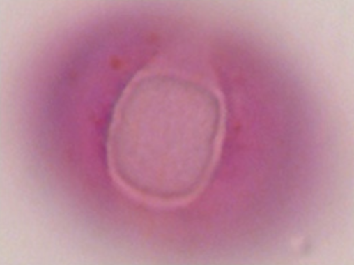
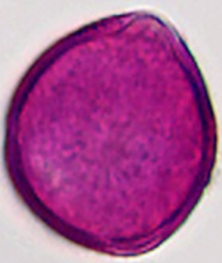
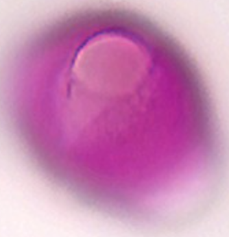
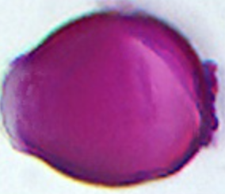

prunus_padusPrunus padus (vogelkers)
assets/images/by-taxon/prunus_padus/prunus_padus_1.png

prunus_spinosaPrunus spinosa (sleedoorn)
assets/images/by-taxon/prunus_spinosa/prunus_spinosa_1.png

prunus_padusPrunus padus (vogelkers)
assets/images/by-taxon/prunus_padus/prunus_padus_2.png

prunus_spinozaPrunus spinosa (sleedoorn)
assets/images/by-taxon/prunus_spinoza/prunus_spinoza_1.png

prunus_laurocerasusPrunus laurocerasus (laurierkers)
assets/images/by-taxon/prunus_laurocerasus/prunus_laurocerasus_1.png

prunus_aviumPrunus avium (zoete kers)
assets/images/by-taxon/prunus_avium/prunus_avium_1.png

prunus_laurocerasusPrunus laurocerasus (laurierkers)
assets/images/by-taxon/prunus_laurocerasus/prunus_laurocerasus_2.png

prunus_aviumPrunus avium (zoete kers)
assets/images/by-taxon/prunus_avium/prunus_avium_2.png

malus_domesticaMalus domestica (appel)
assets/images/by-taxon/malus_domestica/malus_domestica_1.png

malus_sylvestrisMalus sylvestris (wilde appel)
assets/images/by-taxon/malus_sylvestris/malus_sylvestris_1.png